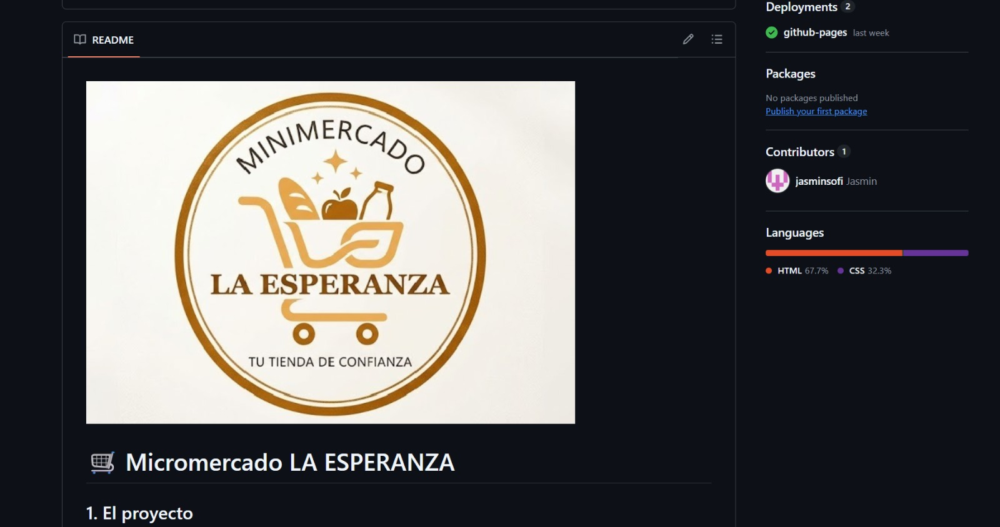
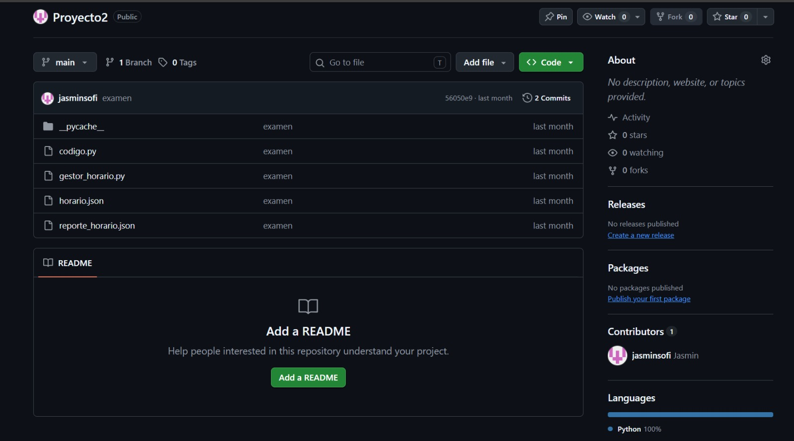

Minimercado La Esperanza
Sitio web comercial para un minimarket de barrio con layout adaptativo, menú de productos y mapa interactivo.
Tecnologías: HTML5, CSS3, GitHub Pages
Ver en GitHubMis Proyectos de Desarrollo
A continuación se presentan algunos de los proyectos desarrollados en clase y de manera independiente:

Sitio web comercial para un minimarket de barrio con layout adaptativo, menú de productos y mapa interactivo.
Tecnologías: HTML5, CSS3, GitHub Pages
Ver en GitHub
Aplicación de consola para detección de conflictos de horarios y exportación de actividades en formato JSON.
Tecnologías: Python, JSON, OOP
Ver en GitHub